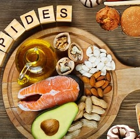

Les lipides sont essentiels au bon fonctionnement de l’organisme. Ils contribuent à la production d’énergie sur le long terme, au bon fonctionnement hormonal et à l’absorption de certaines vitamines indispensables à la santé.

- Avocat – 2g protéines / 100g
- Amandes – 21g protéines / 100g
- Noix – 15g protéines / 100g
- Huile d’olive – 0g protéines / 100g
- Beurre de cacahuète – 25g protéines / 100g
- Saumon – 20g protéines / 100g
- Graines de chia – 17g protéines / 100g
- Graines de lin – 18g protéines / 100g
- Fromage – 25g protéines / 100g
- Chocolat noir – 7g protéines / 100g